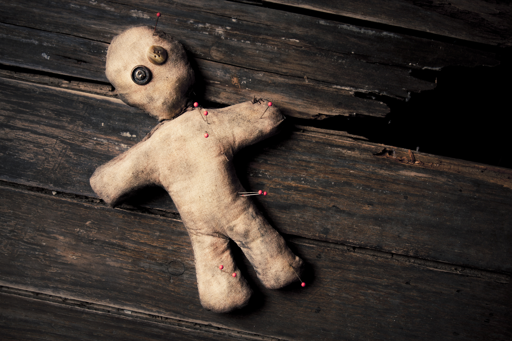

Tablero Ouija

La Ouija es un tablero de madera que tiene alfabeto y números con el que se puede establecer un presunto contacto con espíritus que no pertenecen al plano terrenal.
Muñeco Voodoo
Un Muñeco Voodoo o Vudú es una efigie la cual, a través de magia, esta conectada al alma de un ser, y su uso podría llegar a resultar extremadamente peligroso y dañino.